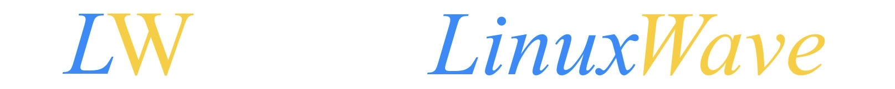

A package manager for macOS/Linux jailbreak developers.
LinuxWave is a package manager that runs on macOS, Linux or WSL, specifically designed to host iOS/iPadOS jailbreak-related software packages for jailbreak developers and researchers. These packages are typically not included in mainstream package managers. Previously, jailbreak projects required downloading from various scattered sources. Now, you only need a single terminal command.
macOS 10.15 Catalina and above
Before installing LinuxWave, you need to install Python(3.13 and above), view at python.org (Click link to open)
In the terminal, run the following command:
$ /bin/bash -c "$(curl -fsSL https://linuxwave.macwave.org/install.sh)"
Important:
After installation, restart your terminal or run the following command to apply PATH changes immediately:
$ source ~/.zshrc
(If you are using bash instead of zsh, run source ~/.bashrc)
To completely remove LinuxWave from your system, run the following command in your terminal:
/bin/bash -c "INSTALL_DIR=\"\$HOME/.local/linuxwave\"; echo -e \"\033[31mYou are deleting LinuxWave, are you sure? [Y/n]\033[0m\"; read -n 1 -r; echo; if [[ ! \$REPLY =~ ^[Yy]\$ ]]; then echo \"🌊 Uninstall cancelled.\"; exit 0; fi; if [ -d \"\$INSTALL_DIR\" ]; then echo \"🌊 Removing \$INSTALL_DIR...\"; rm -rf \"\$INSTALL_DIR\"; else echo \"🌊 LinuxWave installation directory not found. Skipping.\"; fi; for RC_FILE in \"\$HOME/.zshrc\" \"\$HOME/.bashrc\"; do if [ -f \"\$RC_FILE\" ]; then sed -i '' '/# LinuxWave/d' \"\$RC_FILE\" 2>/dev/null || true; sed -i '' '/export PATH=\".*linuxwave\/bin/d' \"\$RC_FILE\" 2>/dev/null || true; echo \"🌊 Removed LinuxWave PATH entries from \$RC_FILE\"; fi; done; echo \"\"; echo \"🌊 LinuxWave has been uninstalled.\"; echo \"🌊 Please restart your terminal to apply changes.\""
Important:
This command permanently removes LinuxWave and its configuration files. Make sure you have copied the entire command correctly before pressing Enter.
Installed binaries are stored in:
~/.local/linuxwave/bin
Haxx (Daniel Stenberg, Linus, Bjorn, Kjell, et al.) for cURL
LinuxWave is built upon the work of the following developers:
choma by Lars Fröder (opa334)
cURL by Haxx (Daniel Stenberg, Linus, Bjorn, Kjell, et al.)
ldid by Jay Freeman (saurik) / Procursus Team
MachOX by Sha0huaZhang (LinuxWave Team)
palera1n by palera1n Team (Nick Chan, Ploosh, Samara, Mineek, staturnz, kokshidoll)
TrollRestore by JJTech0130
Usage: wave <command> [package] [flags]
LinuxWave 1.0.0 🌊
A package manager for macOS/Linux jailbreak developers.
positional arguments:
{install,uninstall,list,search,info,update,upgrade,doctor}
Commands
install Install a package
uninstall Uninstall a package
list List installed packages
search Search for a package in the index
info Display detailed information about a package
update Update the package index
upgrade Upgrade an installed package to the latest version
doctor Check your system for missing dependencies
parameters:
-h, --help show this help message and exit
-V, --version show program's version number and exit
-v, --verbose Enable verbose output (show detailed debug logs, including exception stack traces)
-B, --beta-version Install the latest beta version (if available)
--proxy string Specify an HTTP/HTTPS proxy (e.g., http://127.0.0.1:8080)
--skip-ssl Skip SSL certificate verification (insecure, with interactive confirmation)
--limit-rate string Limit download speed (e.g., 200K, 1M, 5M)
--dry-run Simulate the installation without making changes
--json Output in JSON format (for scripting)
Global Flags (can be used with any command):
-B, --beta-version Install the latest beta version (if available)
-D, --dir string Specify an output directory (e.g., ~/Desktop) for downloads
-C, --continue Resume interrupted downloads (like curl -C -, but just -C, DON'T use -C -!)
--proxy string Specify an HTTP/HTTPS proxy (e.g., http://127.0.0.1:8080)
--skip-ssl Skip SSL certificate verification (insecure, with interactive confirmation)
--limit-rate string Limit download speed (e.g., 200K, 1M, 5M)
--dry-run Simulate the installation without making changes
--json Output in JSON format (for scripting)
--ver string Install a specific version of the package
For more details, visit: https://linuxwave.macwave.org
(Listed in alphabetical order)
choma by Lars Fröder (opa334)
ldid by Jay Freeman (saurik) / Procursus Team
machox by Sha0huaZhang
palera1n by palera1n Team (Nick Chan, Ploosh, Samara, Mineek, staturnz, kokshidoll)
test_001 by Sha0huaZhang
test_no_sha256 by Sha0huaZhang
test_wrong_sha256 by Sha0huaZhang
trollrestore by JJTech0130
This project is licensed under the MIT License.
1. WaveProxy is a sub-project of the MacWave team.Users should carefully read the agreement and possible negative impacts before operation, and bear the consequences themselves. Using LinuxWave means that you have agreed to the above conditions. LinuxWave is not responsible for any losses caused to users by LinuxWave or its software packages.
2. LinuxWave (especially beta versions) may affect users due to code defects, security issues, etc. Users should be aware of and accept this risk, otherwise please do not use it. LinuxWave is not responsible for any losses caused to users' devices, etc.
3. LinuxWave only provides links to software packages, not the software packages themselves. LinuxWave is not responsible for any losses caused to users due to security vulnerabilities, malicious code, etc. of the software packages themselves. If users violate the software package agreement, LinuxWave is not responsible.
4. The software packages distributed by LinuxWave are for legitimate purposes such as learning and research only. They are prohibited for cracking, attacks, or other illegal activities. If losses are caused by improper use, LinuxWave is not responsible.
5. This agreement may be updated. If there is an update and you do not agree to the updated agreement, please delete LinuxWave. For deletion methods, please refer to the official website or official tutorial.
6. Please be sure to download the official software from the LinuxWave official website. If users download LinuxWave software from unofficial sources and suffer losses, LinuxWave is not responsible.
7. Users should read all agreements in full and agree before using LinuxWave and its software packages. Otherwise, please do not use LinuxWave and its software packages.
8. LinuxWave is completely free. Please do not trust any individuals or claims stating that LinuxWave charges a fee. If you suffer losses as a result, LinuxWave is not responsible.
9. LinuxWave does not sell any products. Any messages or posts about paid LinuxWave products are counterfeit. Any individuals or platforms selling LinuxWave are unofficial. LinuxWave is not responsible for any losses caused by this.
10. LinuxWave does not produce any physical products. Any physical products (such as books, comics, etc.) claiming to be related to LinuxWave are counterfeit. LinuxWave is not responsible for any losses caused by this.
11. LinuxWave only produces code, not unrelated products. Any e-books, audio-visual works, etc. claiming to be related to LinuxWave are counterfeit. LinuxWave is not responsible for any losses caused by this.
12. LinuxWave's consultation and feedback channels are completely free, and all feedback is processed equally in order. Any individuals or organizations claiming priority access to consultation or replies, especially those charging fees, are unofficial. LinuxWave is not responsible for any losses caused by this.
13. LinuxWave does not use subscriptions, one-time purchases, or in-app purchases. Any individuals or organizations claiming to help obtain in-app purchases, especially those charging fees, are unofficial. LinuxWave is not responsible for any losses caused by this.
14. LinuxWave's source code is fully open. Any individuals or organizations claiming to provide core code, especially those charging fees, are unofficial. LinuxWave is not responsible for any losses caused by this.
15. LinuxWave does not use a membership system. Any individuals or organizations claiming to offer memberships, especially those charging fees, are unofficial. LinuxWave is not responsible for any losses caused by this.
16. LinuxWave has only one version, and it is publicly available. There are no "Personal Edition", "Enterprise Edition", "Custom Edition", or similar variants. Any such claims are counterfeit. LinuxWave is not responsible for any losses caused by this.
17. The only official website is https://linuxwave.macwave.org. Any other websites are not official. LinuxWave is not responsible for any losses caused by this.
18. Using LinuxWave does not require registration, nor does it require activation codes, etc. Any individuals or organizations claiming to help register LinuxWave accounts, provide LinuxWave accounts, activation codes, etc., especially those charging fees, are unofficial. LinuxWave is not responsible for any losses caused by this.
19. Downloading LinuxWave may consume network data. Users should be aware of this and handle it properly. LinuxWave is not responsible for any losses caused by this.
20. Contacting LinuxWave official support or sending emails may consume network data. Users should be aware of this and handle it properly. LinuxWave is not responsible for any losses caused by this.
21. Official accounts are only registered on Twitter (X) and GitHub. Any accounts on other platforms are counterfeit. LinuxWave is not responsible for any losses caused by this.
22. The only official feedback email address is hi@macwave.org, but replies will be sent from trollresignertest1@outlook.com. Please do not send messages directly to trollresignertest1@outlook.com, and do not wait for reply emails from hi@macwave.org. Do not trust other email addresses claimed by others or organizations as official, and do not treat replies from other emails as official replies. LinuxWave is not responsible for any losses caused by this.
23. Users should use LinuxWave and its software packages in accordance with official guidelines. LinuxWave is not responsible for any losses caused by not following the guidelines, not reading the guidelines, or operational errors.
24. Users should download LinuxWave on eligible devices. For specific requirements, please refer to the official website. If losses are caused by violations, LinuxWave is not responsible.
25. Users should confirm their system environment, device model, etc., and verify from reliable sources (such as official documentation of other software) whether there are conflicts. If losses are caused by software conflicts, LinuxWave is not responsible.
26. Users are only permitted to run LinuxWave on their personal devices. LinuxWave is not responsible for any losses caused by running LinuxWave on others' devices, public devices, or devices without the owner's authorization.
27. LinuxWave is not responsible for any losses caused by running LinuxWave due to bugs in the operating system or virtual machine itself.
28. LinuxWave is not responsible for any losses caused by LinuxWave not running as expected due to unauthorized hardware modifications.
29. LinuxWave is not responsible for any losses caused by using it for unofficial purposes.
30. Private redistribution of LinuxWave and its software packages, modified versions, etc., is permitted, but the original author and official website must be credited, and others must be clearly informed that this version is a modified version. Distributing non-official products and software packages under descriptions such as "official version" is prohibited. Non-official versions of LinuxWave may also cause losses. If any of these violations cause losses, LinuxWave is not responsible.
31. Without the permission of the original author, you shall not misuse, reuse, register trademarks, or otherwise occupy the LinuxWave icon and its name, or occupy them in a way that sufficiently associates users with them.
32. LinuxWave is not responsible for any losses caused by incomplete downloads of executable scripts due to network fluctuations, etc.
33. LinuxWave is not responsible for any losses suffered by users due to force majeure.
34. LinuxWave has no cooperation with any company or profit-making organization. Any claims of cooperation with LinuxWave by companies or profit-making organizations are counterfeit. LinuxWave is not responsible for any losses caused by this.
1. WaveProxy隶属于MacWave团队。用户在操作前应仔细阅读协议及可能造成的负面影响，并自行承担后果，使用LinuxWave即视为已达成上述条件。LinuxWave及其软件包对使用者造成损失的，LinuxWave不承担责任
2. LinuxWave（尤其是beta版）可能由于自身代码缺陷、安全问题等对用户造成影响，用户应知悉并接受这一风险，否则请勿使用。对用户的设备等造成损失的，LinuxWave不承担责任
3. LinuxWave仅提供指向软件包的链接，不提供软件包本身。软件包因本身的安全漏洞、恶意代码等对用户造成损失的，LinuxWave不承担责任。用户如果违反软件包协议，LinuxWave不承担责任
4. LinuxWave分发的软件包仅供学习、研究等正当用途，禁止用于破解、攻击等行为。如果用于不正当用途造成损失，LinuxWave不承担责任
5. 本协议可能会有更新。如有，且你不同意更新后的协议，请删除LinuxWave，删除方法参见官网或官方教程
6. 请务必从LinuxWave官方网站下载正版软件。如果用户从非官方渠道下载的LinuxWave软件造成损失，LinuxWave不承担责任
7. 用户应完整阅读所有协议并同意后再使用LinuxWave及其软件包，否则请勿使用LinuxWave及其软件包
8. LinuxWave完全免费，请勿相信任何宣称LinuxWave收费的言论、人员等。因此蒙受损失的，LinuxWave不承担责任
9. LinuxWave不出售任何产品。任何有关LinuxWave收费产品的消息、帖子等均属伪造，任何出售LinuxWave的个人、平台等均为非官方，由此造成损失的，LinuxWave不承担责任
10. LinuxWave不产出任何实体产品。任何有关LinuxWave的实体产品（如书籍、漫画等）均属伪造。由此造成损失的，LinuxWave不承担责任
11. LinuxWave仅产出代码，不产出无关产品。任何有关LinuxWave的电子书、音像制品等均属伪造。由此造成损失的，LinuxWave不承担责任
12. LinuxWave的咨询和反馈平台完全免费，且按顺序平等处理所有反馈。任何宣称可以优先获得咨询、回复等，尤其是收取费用的的个人或组织均为非官方。由此造成损失的，LinuxWave不承担责任
13. LinuxWave不使用订阅制、买断制或内购，任何宣称可以帮忙获取内购的个人、组织等，尤其是收取费用的均为非官方。由此造成损失的，LinuxWave不承担责任。
14. LinuxWave的源代码全部公开。任何宣称可以提供核心代码的个人、组织等，尤其是收取费用的均为非官方。由此造成损失的，LinuxWave不承担责任。
15. LinuxWave不使用会员制。任何宣称可以申请会员的个人、组织等，尤其是收取费用的均为非官方。由此造成损失的，LinuxWave不承担责任。
16. LinuxWave只有一个版本，且公开。不存在"个人版""企业版""定制版"或类似内容，如有，均属伪造。由此造成损失的，LinuxWave不承担责任。
17. 官方唯一网址为https://linuxwave.macwave.org，其他网址均不是官方网址。因此造成损失的，LinuxWave不承担责任
18. 使用LinuxWave无需注册，也没有激活码等，任何宣称可以帮忙注册LinuxWave账号，提供LinuxWave账号、激活码等的个人、组织等，尤其是收取费用的均为非官方。由此造成损失的，LinuxWave不承担责任。
19. 下载LinuxWave可能会消耗网络流量，下载前须知悉并妥善处理，否则造成损失的，LinuxWave不承担责任
20. 向LinuxWave官方咨询、发送邮件等可能消耗网络流量，下载前须知悉并妥善处理，否则造成损失的，LinuxWave不承担责任
21. 官方账号仅在Twitter(X)、GitHub注册，其他平台如有则均为仿造。因此造成损失的，LinuxWave不承担责任
22. LinuxWave唯一反馈邮箱地址为hi@macwave.org，但回复你的邮箱地址为trollresignertest1@outlook.com。请勿直接向trollresignertest1@outlook.com发送信息，也不要等待hi@macwave.org的回复邮件。不要相信他人或组织等声称的其他邮箱地址，不要向其他邮箱视为官方邮箱发送邮件，也不要将其他邮箱的回复视为官方回复。由此造成损失的，LinuxWave不承担责任
23. 用户应按照官方指导使用LinuxWave及其软件包。对于不按照指导、不阅读指导、操作失误等原因导致损失的，LinuxWave不承担责任
24. 用户应在符合条件的设备下载LinuxWave，具体要求参见官网。如有违反导致损失，LinuxWave不承担责任
25. 用户应确认自己的系统环境、设备型号等信息，并从可信来源（如其他软件的官方说明等）确认是否冲突。如果由于软件冲突导致损失，LinuxWave不承担责任
26. 用户仅可在个人设备运行LinuxWave，在他人、公共设备或未经持有者授权设备运行LinuxWave造成损失的，LinuxWave不承担责任
27. 由于操作系统或虚拟机自身的Bug导致用户运行LinuxWave造成损失的，LinuxWave不承担责任
28. 由于私自改装硬件设备等原因导致LinuxWave未按预期运行并导致损失的，LinuxWave不承担责任
29. 用于非官方用途导致损失的，LinuxWave不承担责任
30. 允许私自分发LinuxWave及其软件包、修改版等，但必须注明原作者及官方网站，并明确告知其他人此版本为改版，禁止以"官方正版"等描述分发非正版产品及软件包。非官方版本可能也会造成损失。如果违反且造成损失，LinuxWave不承担责任
31. 未经原作者允许，不得以滥用、复用、注册商标等方式侵占LinuxWave图标及其名称，或以充分使用户联想、关联的方式侵占
32. 由于网络波动等原因导致软件可执行脚本下载不全并造成损失的，LinuxWave不承担责任
33. 由于不可抗力因素导致用户蒙受损失的，LinuxWave不承担责任
34. LinuxWave未与任何公司或营利组织等产生合作，如有公司或营利组织等声称与LinuxWave合作均属伪造。由此造成损失的，LinuxWave不承担责任